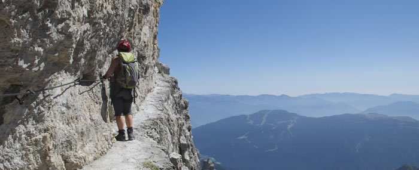
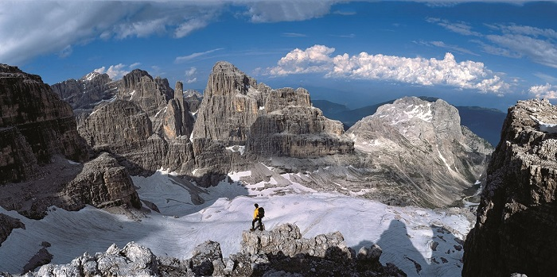

6-daagse huttentocht door de Alpen
Wij organiseren een 6-daagse rondtrek door de Italiaanse Alpen, de Dolomieten. Op deze pagina vindt u alles wat u moet weten.
Overzicht van de reis
Deze uit 6 dagen bestaande huttentocht brengt u via de Via delle Bocchette langs het spectaculairste gedeelte van de Italiaanse Alpen, de Dolomieten. Hier volgt een van dag tot dag beschrijving.
Etappe 1
Sentiero Alfredo Benini
Bergstation Funivia del Groste (2443 m) - Bocca di Tuckett (2648 m)
U volgt hier een Via Ferrata, een route die beveiligd is met staalkabels. Deze route is redelijk eenvoudig, hoewel er af en toe gebruik van ladders noodzakelijk is. Voor deze tocht wordt gemiddeld 3 uur gerekend.
Etappe 2
Via delle Bocchetta Alta
Bocca di Tuckett (2648 m) - Boccia degli Armi (2749 m)
Dit is de zwaarste tocht waarbij de meeste wandelervaring vereist is. Tijdens deze wandeling komt u boven de 3000m. Er is sprake van ongezekerde stukken over smalle richels en steile sneeuwvlaktes. Het is mogelijk deze route te omzeilen en onderlangs een Via Ferrata te nemen. Voor deze tocht wordt 5 tot 6 uur gerekend.
Etappe 3
Via delle Bocchetta Centrale
Boccia degli Armi (2749 m) - Boccia di Brenta (2496 m)
Tijdens deze route passeert u de bekende rotsnaald Guglia di Brenta, op 2883 meter hoogte. Deze route wordt qua landschap als de mooiste route van de tocht beschouwd. Het is geen lastige route, al komt u wel langs grote afgronden. Deze tocht duurt 3 tot 4 uur.
Etappe 4
Sentiero Livio Brentani
Bocca di Brenta (2496 m) - Rifugio Agostini (2410 m)
Tijdens deze tocht wordt u door kleine gletsjers geleid. Er is sprake van een afdaling langs steile ladders, die vervormd zijn door bliksem en steenslag. Verder is het geen moeilijke route. Deze tocht duurt 3 uur.
Etappe 5
Sentiero Ettore Castiglione
Rifugio Agostini (2410 m) - Rifugio Dodice Apostoli (2480 m)
Dit is een korte maar spectaculaire Via Ferrata. Vele steile ladders die soms afgronden overbruggen leiden u naar Bocca dei Due Denti, waarna u de route naar Rigugio Dodice Apostoli vervolgt. Deze tocht duurt 2.5 uur.
Etappe 6
Sentiero del Ideale + Sentiero Martinazzi
Rifugio Dodice Apostoli (2480 m) - Vallesinetta (1513 m)
Tijdens deze wat langere wandeling daalt u een flink stuk naar uw eindbestemming. U passeert twee kleine gletsjers en een geweldige vallei onderlangs de Crozzon di Brenta. Deze wandeling duurt 6 uur.
Algemene informatie
- MarkeringDe route is gemarkeerd met verfstrepen. Langs de bergpaden moet u de met ijzer beveiligde paden volgen.
- Moeilijkheidsgraad Deze huttentocht wordt beschouwd als zwaar. Het wordt niet aangeraden kinderen mee te nemen. Erg steile bergpaden langs hoge bergen boven grote afgronden kunnen gevaarlijk zijn. Ook ouderen of conditioneel erg zwakke personen wordt het afgeraden om aan deze tocht deel te nemen. Vele steile ladders kunnen zwaar zijn voor de armspieren.
- Benodigdheden Het is noodzakelijk om een klettersteiggordel en helm mee te nemen en er mee om te kunnen gaan.
- Beste reisperiode Er wordt aangeraden deze tocht tussen half juni en half september te lopen, in verband met weersomstandigheden.
- Overnachtingen U overnacht in berghutten met redelijk comfort. Ontbijt en avondeten doet u in de hutten en zijn inbegrepen. Aangezien er bij de berghutten geen supermarkten zijn wordt lunch voor onderweg geregeld door de desbetreffende hutten. Ook dit is inbegrepen.
Kosten
De gehele reis kost 350,- per persoon. Er zijn geen uitbreidingen op het programma beschikbaar.
| Inbegrepen | Niet inbegrepen |
|---|---|
| heen- en terugreis | verzekeringen |
| verblijf in hutten + drie maaltijden per dag | persoonlijke uitgaven |
| verplaatsing Madonni di Campiglio naar Via delle Bocchette | aanschaf van berguitrusting |